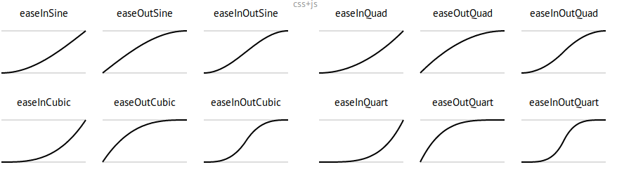

第 30 章 ggplot2之让你的数据动起来
这节课，我们讲如何让我们的图动起来。（因为渲染需要花费很长时间，所以文档中的动图代码都没有执行。）
30.2 gganimate宏包
动图可以将其理解为多张静态图堆在一起，当然不是随意的堆放，而是按照一定的规则，比如按照时间的顺序，或者类别的顺序。一般而言，动图制作包括两个步骤: 静态图制作及图形组装。静态图制作，前面几章我们讲过主要用ggplot2宏包实现；对于图形组装，需要用到今天我们要讲Thomas Lin Pedersen的gganimate宏包，来自同一工厂的产品，用起来自然是无缝衔接啦。
install.packages("gganimate")30.2.1 先来一张静态图
covdata::covnat %>%
dplyr::filter(iso3 == "USA") %>%
dplyr::filter(cu_cases > 0) %>%
ggplot(aes(x = date, y = cases)) +
geom_path() +
labs(
title = "美国新冠肺炎累积确诊病例",
subtitle = "数据来源https://kjhealy.github.io/covdata/"
)让它动起来，我们只需要增加一行代码！
30.2.2 相对复杂点的例子
library(datasauRus)
ggplot(datasaurus_dozen) +
aes(x, y, color = dataset) +
geom_point()用分面展示
ggplot(datasaurus_dozen) +
aes(x, y, color = dataset) +
geom_point() +
facet_wrap(~dataset)可以用动图展示
ggplot(datasaurus_dozen) +
aes(x, y, color = dataset) +
geom_point() +
transition_states(dataset, 3, 1) + # <<
labs(title = "Dataset: {closest_state}")是不是很炫酷，下面我们就一个个讲解其中的函数。
30.3 The grammar of animation
使用gganimate做动画，只需要掌握以下五类函数：
-
transition_*(): 定义动画是根据哪个变量进行”动”，以及如何”动” -
view_*(): 定义坐标轴随数据变化. -
shadow_*(): 影子（旧数据的历史记忆）?定义点相继出现的方式. -
enter_*()/exit_*(): 定义新数据出现和旧数据退去的方式. -
ease_aes(): 美观定义，控制变化的节奏(如何让整个动画看起来更舒适).
下面通过案例依次讲解这些函数功能。
30.4 希望动画随哪个变量动起来
变量如何选择，这需要从变量类型和变量代表的信息来确定。
30.4.1 transition_states
-
transition_states(states = ), 这里的参数states往往带有分组信息，可以等价于静态图中的分面。
diamonds %>%
ggplot(aes(carat, price)) +
geom_point()
diamonds %>%
ggplot(aes(carat, price)) +
geom_point() +
facet_wrap(vars(color))
diamonds %>%
ggplot(aes(carat, price)) +
geom_point() +
transition_states(states = color, transition_length = 3, state_length = 1)30.4.2 transition_time
-
transition_time(time = ), 这里的time一般认为是连续的值，相比于transition_states，没有了transtion_length这个选项，是因为transtion_length默认为time. 事实上，transition_time是transition_states的一种特例，但其实也有分组的要求
library(ggplot2)
library(gganimate)
library(gapminder)
plot <- ggplot(gapminder, aes(gdpPercap, lifeExp, size = pop, color = country)) +
geom_point(alpha = 0.7, show.legend = FALSE) +
scale_colour_manual(values = gapminder::country_colors) +
scale_size(range = c(2, 12)) +
scale_x_log10() +
facet_wrap(vars(continent)) +
labs(title = "Year: {frame_time}", x = "GDP Per capita", y = "life expectancy") +
transition_time(year) +
ease_aes("linear")
plot
# save as a GIF
# animate(plot, fps = 30, width = 750, height = 750)
# anim_save("gapminder.gif")
p <- gapminder::gapminder %>%
ggplot(aes(x = gdpPercap, y = lifeExp, size = pop, colour = country)) +
geom_point(alpha = 0.7, show.legend = FALSE) +
scale_size(range = c(2, 12)) +
scale_x_log10() +
labs(
x = "GDP per capita",
y = "life expectancy"
)
p
anim <- p +
transition_time(time = year) +
labs(title = "year: {frame_time}")
anim30.4.3 transition_reveal
-
transition_reveal(along = ), along 这个词可以看出，它是按照某个变量依次显示的意思，比如顺着x轴显示
ggplot(economics) +
aes(x = date, y = unemploy) +
geom_line() +
transition_reveal(along = date) +
labs(title = "now is {frame_along}")30.4.4 transition_filter
-
transition_filter( 至少2个筛选条件，transition_length = , filter_length =), 动图将会在这些筛选条件对应的子图之间转换
diamonds %>%
ggplot(aes(carat, price)) +
geom_point() +
transition_filter(
transition_length = 3,
filter_length = 1,
cut == "Ideal",
Deep = depth >= 60
)30.4.5 transition_layers
-
transition_layers(): 依次显示每个图层
mtcars %>%
ggplot(aes(mpg, disp)) +
geom_point() +
geom_smooth(colour = "grey", se = FALSE) +
geom_smooth(aes(colour = factor(gear))) +
transition_layers(
layer_length = 1, transition_length = 2,
from_blank = FALSE, keep_layers = c(Inf, 0, 0)
) +
enter_fade() +
exit_fade()30.5 希望坐标轴随数据动起来
动画过程中，绘图窗口怎么变化呢？
30.5.1 view_follow
ggplot(iris, aes(Sepal.Length, Sepal.Width)) +
geom_point() +
labs(title = "{closest_state}") +
transition_states(Species, transition_length = 4, state_length = 1) +
view_follow()30.6 希望动画有个记忆
-
shadow_wake(wake_length =, )旧数据消退时，制造点小小的尾迹的效果（wake除了叫醒，还有尾迹的意思，合起来就是记忆_尾迹） -
shadow_trail(distance = 0.05)旧数据消退时，制造面包屑一样的残留痕迹（记忆_零星残留） -
shadow_mark(past = TRUE, future = FALSE)将旧数据和新数据当作背景（记忆_标记）
30.6.1 shadow_wake()
p +
transition_time(time = year) +
labs(title = "year: {frame_time}") +
shadow_wake(wake_length = 0.1, alpha = FALSE)
ggplot(iris, aes(Petal.Length, Sepal.Length)) +
geom_point(size = 2) +
labs(title = "{closest_state}") +
transition_states(Species, transition_length = 4, state_length = 1) +
shadow_wake(wake_length = 0.1)30.6.2 shadow_trail()
p +
transition_time(time = year) +
labs(title = "year: {frame_time}") +
shadow_trail(distance = 0.1)
ggplot(iris, aes(Petal.Length, Sepal.Length)) +
geom_point(size = 2) +
labs(title = "{closest_state}") +
transition_states(Species, transition_length = 4, state_length = 1) +
shadow_trail(distance = 0.1)30.6.3 shadow_mark()
p +
transition_time(time = year) +
labs(title = "year: {frame_time}") +
shadow_mark(alpha = 0.3, size = 0.5)
ggplot(airquality, aes(Day, Temp)) +
geom_line(color = "red", size = 1) +
transition_time(Month) +
shadow_mark(colour = "black", size = 0.75)30.7 定义新数据出现和旧数据退去的方式
出现和退去的函数是成对的
30.7.1 enter/exit_fade()
透明度上的变化，我这里用柱状图展示，效果要明显一点。
tibble(
x = month.name,
y = sample.int(12)
) %>%
ggplot(aes(x = x, y = y)) +
geom_col() +
theme(axis.text.x = element_text(angle = 45, hjust = 1, vjust = 1)) +
transition_states(states = month.name)
tibble(
x = month.name,
y = sample.int(12)
) %>%
ggplot(aes(x = x, y = y)) +
geom_col() +
theme(axis.text.x = element_text(angle = 45, hjust = 1, vjust = 1)) +
transition_states(states = month.name) +
shadow_mark(past = TRUE) +
enter_fade()
p +
transition_time(time = year) +
labs(title = "year: {frame_time}") +
enter_fade()30.7.2 enter_grow()/exit_shrink()
大小上的变化
tibble(
x = month.name,
y = sample.int(12)
) %>%
ggplot(aes(x = x, y = y)) +
geom_col() +
theme(axis.text.x = element_text(angle = 45, hjust = 1, vjust = 1)) +
transition_states(states = month.name) +
shadow_mark(past = TRUE) +
enter_grow()
p +
transition_time(time = year) +
labs(title = "year: {frame_time}") +
enter_grow() +
enter_fade()30.8 控制变化的节奏
控制数据点变化的快慢
knitr::include_graphics("images/ease.png")
Source: https://easings.net/
看下面的案例：
diamonds %>%
ggplot(aes(carat, price)) +
geom_point() +
transition_states(color, transition_length = 3, state_length = 1) +
ease_aes("cubic-in") # Change easing of all aesthetics
diamonds %>%
ggplot(aes(carat, price)) +
geom_point() +
transition_states(color, transition_length = 3, state_length = 1) +
ease_aes(x = "elastic-in") # Only change `x` (others remain “linear”)30.9 标签
我们可能需要在标题中加入每张动画的信息，常用罗列如下
transition_states(states = ) +
labs(title = "previous is {previous_state},
current is {closest_state},
next is {next_state}")
transition_layers() +
labs(title = "previous is {previous_layers},
current is {closest_layers},
next is {next_layers}")
transition_time(time = ) +
labs(title = "now is {frame_time}")
transition_reveal(along = ) +
labs(title = "now is {frame_along}")30.10 保存
30.10.1 Renderer options
## # A tibble: 6 × 2
## Function Description
## <chr> <chr>
## 1 gifski_renderer Default, super fast gif renderer.
## 2 magick_renderer Somewhat slower gif renderer.
## 3 ffmpeg_renderer Uses ffmpeg to create a video from the animation.
## 4 av_renderer Uses the av package to create a video (using ffmpeg).
## 5 file_renderer Dumps a list of image frames from the animation.
## 6 sprite_renderer Creates a spritesheet from frames of the animation.30.10.2 常用方法
一般用anim_save()保存为 gif 格式，方法类似ggsave()
animation_to_save <- diamonds %>%
ggplot(aes(carat, price)) +
geom_point() +
transition_states(color, transition_length = 3, state_length = 1) +
ease_aes("cubic-in")
anim_save("first_saved_animation.gif", animation = animation_to_save)30.11 案例演示一
这是网上有段时间比较火的racing_bar图
ranked_by_date <- covdata::covnat %>%
group_by(date) %>%
arrange(date, desc(cu_cases)) %>%
mutate(rank = 1:n()) %>%
filter(rank <= 10) %>%
ungroup()
ranked_by_date %>%
filter(date >= "2020-05-01") %>%
ggplot(
aes(x = rank, y = cname, group = cname, fill = cname)
) +
geom_tile(
aes(
y = cu_cases / 2,
height = cu_cases,
width = 0.9
),
alpha = 0.8,
show.legend = F
) +
geom_text(aes(
y = cu_cases,
label = cname
),
show.legend = FALSE
) +
scale_x_reverse(
breaks = c(1:10),
label = c(1:10)
) +
theme_minimal() +
coord_flip(clip = "off", expand = FALSE) +
labs(
title = "日期: {closest_state}",
x = "",
caption = "Source: github/kjhealy/covdata"
) +
transition_states(date,
transition_length = 4,
state_length = 1,
wrap = TRUE
) +
ease_aes("cubic-in-out")30.12 案例演示二
bats %>%
ggplot(aes(
x = longitude,
y = latitude,
group = id,
color = id
)) +
geom_point()30.12.1 常规的方法
bats %>%
ggplot(aes(
x = longitude,
y = latitude,
group = id,
color = id
)) +
geom_point() +
transition_time(time) +
shadow_mark(past = TRUE)- geom_path()是按照数据点出现的先后顺序
- geom_line()是按照数据点在x轴的顺序
bats %>%
ggplot(aes(
x = longitude,
y = latitude,
group = id,
color = id
)) +
geom_path() +
transition_time(time) +
shadow_mark(past = TRUE)30.13 案例演示三
全球R-Ladies组织，会议活动的情况，我们在地图上用动图展示
rladies <- read_csv("./demo_data/rladies.csv")
rladies这里需要一个地图，可以这样
当然，最好是这样
library(maps)
world <- map_data("world")
world_map <- ggplot() +
geom_polygon(data = world,
aes(x = long, y = lat, group = group),
color = "white", fill = "gray80"
) +
ggthemes::theme_map()
world_map 然后把点打上去
world_map +
geom_point(
data = rladies,
aes(x = lon, y = lat, size = followers),
colour = "purple", alpha = .5
) +
scale_size_continuous(
range = c(1, 8),
breaks = c(250, 500, 750, 1000)
) +
labs(size = "Followers")用动图展示（这种方法常用在流行病传播的展示上）
world_map +
geom_point(aes(x = lon, y = lat, size = followers),
data = rladies,
colour = "purple", alpha = .5
) +
scale_size_continuous(
range = c(1, 8),
breaks = c(250, 500, 750, 1000)
) +
transition_states(created_at) +
shadow_mark(past = TRUE) +
labs(title = "Day: {closest_state}")30.14 课后作业
30.14.1 作业1
把下图弄成你喜欢的样子
library(gapminder)
theme_set(theme_bw())
ggplot(gapminder) +
aes(
x = gdpPercap, y = lifeExp,
size = pop, colour = country
) +
geom_point(show.legend = FALSE) +
scale_x_log10() +
scale_color_viridis_d() +
scale_size(range = c(2, 12)) +
labs(x = "GDP per capita", y = "Life expectancy") +
transition_time(year) +
labs(title = "Year: {frame_time}")30.14.2 作业2
那请说说这以下三个的区别？
bats %>%
dplyr::filter(id == 1) %>%
ggplot(
aes(
x = longitude,
y = latitude
)
) +
geom_point() +
transition_reveal(time) # <<
bats %>%
dplyr::filter(id == 1) %>%
ggplot(
aes(
x = longitude,
y = latitude
)
) +
geom_point() +
transition_states(time) # <<
bats %>%
dplyr::filter(id == 1) %>%
ggplot(
aes(
x = longitude,
y = latitude
)
) +
geom_point() +
transition_time(time) # <<